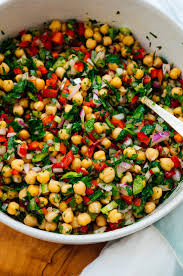

Chickpea Salad

Description
This chickpea salad is beyond easy to throw together. Chop up a few ingredients, rinse and drain canned chickpeas, and stir it all together in a bowl!
This salad packs great for lunch, picnics, road trips and plane rides. It’s vegan/dairy free, gluten free, and nut free, for all to enjoy.
Ingredients
- 2 cans (15 ounces each) chickpeas, rinsed and drained, or 3 cups cooked chickpeas
- 1 medium red bell pepper, chopped
- 1 ½ cups chopped fresh flat-leaf parsley (about 1 bunch)
- ½ cup chopped red onion (about ½ small)
- ½ cup chopped celery (about 2 ribs)
- 3 tablespoons extra-virgin olive oil
- 3 tablespoons lemon juice (from 1 to 1 ½ lemons), or more if needed
- 2 cloves garlic, pressed or minced
- ½ teaspoon fine salt
- Freshly ground black pepper, to taste
Steps
-
In a medium bowl, combine all of the ingredients. Toss until combined. Taste and add additional lemon juice, salt, or pepper if necessary.
- Serve immediately, or chill until you’re ready to serve. Leftovers keep well, covered in the refrigerator, for up to 4 days.